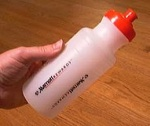
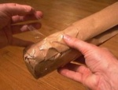
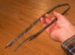
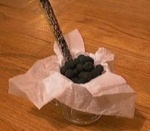
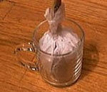
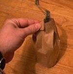
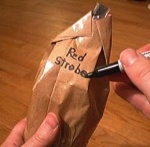

Mines - 3 inch
From PyroGuide
Mines - a firework similar to a shell that explodes in a mortar, igniting effects such as stars and launching them into the air.
[edit] Tutorial
| The first task is to scrounge around for a former that is the right size. Here is a picture of a water bottle that is about 1/4 inch smaller in diameter than the mortar used to fire the finished mine. |  |
| A common, ordinary brown paper bag, such as a lunch bag, is folded neatly around the former or sloppily scrunched around it, depending on the artisan's personal style. A few wraps of packing tape will assure that the original shape of the former will be retained by the bag upon removal of the former. Now, you could painstakingly construct a cylindrical mine bag by custom cutting a piece of craft paper to roll around the former, but either approach will produce a result which is pretty much functionally equivalent. |  |
| Next, we need a leader fuse that is long enough to protrude from the mortar by about 12 inches. For single shot mine mortars, a length of sticky match will do nicely. The picture shows a length of match with a piece of visco at one end and a piece of black match at the other end. The visco end is obviously where ignition fire is applied and allows the prudent person some time to retire to a safe distance before fire is passed to the fast burning sticky match. The other end with the ignitercord or black match is expected to hold the ignition fire in the vicinity of the stars for a long enough time to ignite them. The flash flame of sticky match alone might not reliably ignite the stars in the mine. A note of caution is in order at this point. If you are planning to load a lot of these mines into a rack of mortars, the sticky match leader fuse is not the best idea. In this case, one should use a leader of quick match because it is much less vulnerable to accidental ignition from sparks from a nearby mortar which has fired its contents skyward. |  |
| To make a simple star bag, a small cup is used as a former. A 10 inch square piece of tissue paper is stuffed into the cup as shown. The black match end of the sticky match is placed in the cup and 100 grams of your favorite stars are added. It's a good idea to bend the piece of black match into an "L" so it won't poke a hole in the bottom of the star bag. |  |
| Now the edges of the tissue paper are drawn up around the fuse and secured with a wrap of tape. The tape should keep the fuse from being pulled out of the star bag. |  |
| Finally, approximately 24 grams of good quality lift powder is placed in the bottom of the mine bag. Depending upon the quality of lift powder, the amount used may need to be adjusted. The star bag assembly is placed into the mine bag on top of the lift powder. The concept, here, is that this method of assembly encourages good star ignition because the stars begin to burn for a short time before the lift powder is ignited by them and ejects them from the mortar. The final step is to close the top end of the bag with some manner of folding and taping. The fastidious craftsman will want to make a few pleats and tape it closed neatly. The less fussy person may just scrunch the top around the fuse and put a wrap of tape around it. To each his own. |  |
| If you plan to make a lot of different kinds of mines with various kinds of stars in them, you will be well advised to use a marker to label your mines. It's a little embarrassing to announce to your audience that the next mine will be a glitter mine with red strobes for accent and upon lighting it, the mine turns out to be blue to green color changers. These 3 inch mines will put up a large column of stars to a height of about 80 feet. |  |
- Dan Williams, Amateur Pyrotechnician - http://fogoforum.us/index.html

{kind=link}
{kind=link}
{kind=link}
{kind=link}
{kind=link}
{kind=link}
{kind=link}